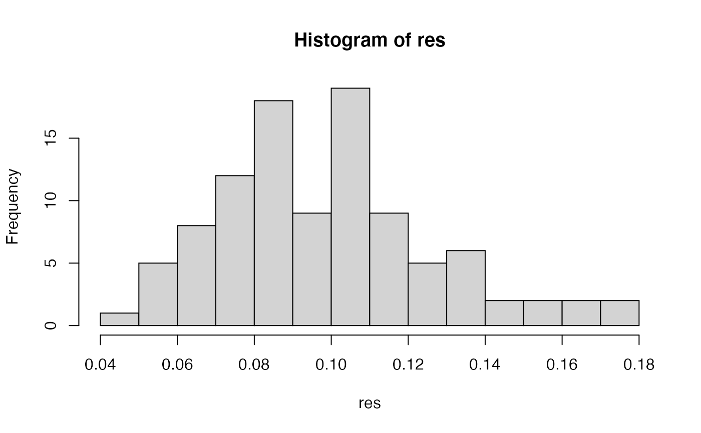
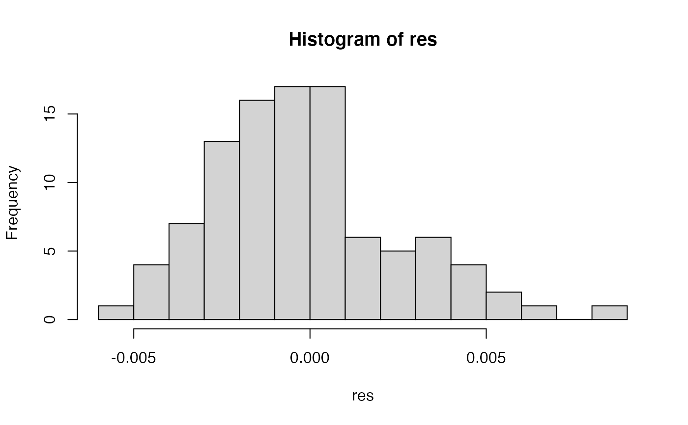

R/bitwise.r
samp.ia.RdGenlight objects can contain millions of loci. Since it does not make much sense to calculate the index of association over that many loci, this function will randomly sample sites to calculate the index of association.
samp.ia(x, n.snp = 100L, reps = 100L, threads = 1L, quiet = FALSE)
| x | a [genlight][genlight-class] or [snpclone][snpclone-class] object. |
|---|---|
| n.snp | the number of snps to be used to calculate standardized index of association. |
| reps | the number of times to perform the calculation. |
| threads | The maximum number of parallel threads to be used within this function. A value of 0 (default) will attempt to use as many threads as there are available cores/CPUs. In most cases this is ideal. A value of 1 will force the function to run serially, which may increase stability on some systems. Other values may be specified, but should be used with caution. |
| quiet | if `FALSE`, a progress bar will be printed to the screen. |
Index of association representing the samples in this genlight object.
The index of association is a summary of linkage disequilibrium among many loci. More information on the index of association can be found associated with the funciton [ia()]. A value near or at zero indicator of linkage equilibrium, whereas values significantly greater than zero indicate linkage disequilibrium. However, if the observed variance in distance among individuals is less than the expected, mildly negative values may be observed (as the range of this index is negative one to one). This function will call the function [bitwise.ia()] for `reps` times to calculate the index of association over `n.snp` loci. The standardized index of association ('rbarD') will be calculated `reps` times. These esitmates of linkage disequilibrium from random genomic fractions can then be summarized (e.g., using a histogram) as an estimate of genome-wide linkage disequilibrium.
This function currently only works for objects of class genlight or snpclone that are of a single ploidy level and that ploidy is either haploid or diploid.
this will calculate the standardized index of association from Agapow 2001. See [ia()] for details.
[genlight][genlight-class], [snpclone][snpclone-class], [win.ia()], [ia()], [bitwise.dist()] [bitwise.ia()]
Zhian N. Kamvar, Jonah C. Brooks
# with structured snps assuming 1e4 positions set.seed(999) x <- glSim(n.ind = 10, n.snp.nonstruc = 5e2, n.snp.struc = 5e2, ploidy = 2, parallel = FALSE) position(x) <- sort(sample(1e4, 1e3)) res <- samp.ia(x) hist(res, breaks = "fd")# with unstructured snps assuming 1e4 positions set.seed(999) x <- glSim(n.ind = 10, n.snp.nonstruc = 1e3, ploidy = 2) position(x) <- sort(sample(1e4, 1e3)) res <- samp.ia(x) hist(res, breaks = "fd")